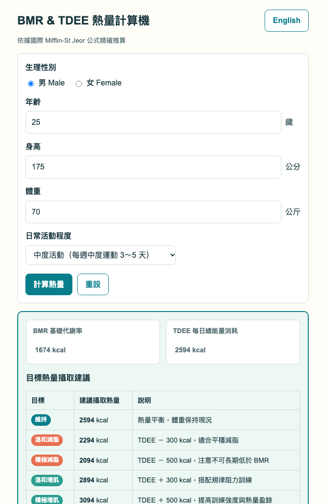
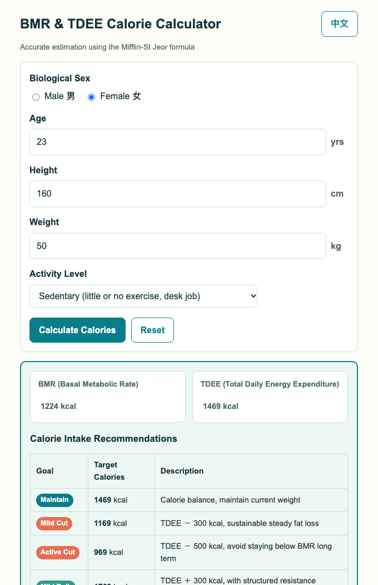

多數人減重只知道少吃，熱量攝取低於基礎代謝率（BMR），導致肌肉流失、代謝大幅下降與溜溜球效應。
Dieting without scientific target calories often leads to prolonged deficit below BMR, triggering metabolic slowdown and severe rebound.
現有健康工具往往強迫登入、綁定手機、廣告大量洗版，甚至過度蒐集使用者個人健康隱私資料。
Commercial apps force accounts, require downloads, feature spam ads, and track sensitive personal data.
打造「10 秒內算完就走」的開箱即用網頁工具：精確醫學公式、五大生活目標方針與代謝安全防呆。
A 10-second web tool built on clinical formulas, offering clear goal calorie tiers and proactive metabolic safeguards.
依生理性別、年齡、身高、體重精算 BMR；搭配 5 段日常活動係數（1.2 至 1.9）精準計算每日總消耗 TDEE。
Calculates BMR via Mifflin-St Jeor formula and multiplies by 5 PAL tiers (1.2 to 1.9) for customized TDEE.
即時呈現維持體重、溫和減脂（-300 kcal）、積極減脂（-500 kcal）、溫和增肌（+300 kcal）與積極增肌（+500 kcal）。
Instant targets for Maintenance, Mild Cut (-300), Active Cut (-500), Mild Bulk (+300), and Active Bulk (+500).
當赤字熱量低於個人 BMR 底線時自動亮起紅色警示，提醒使用者以身體健康為重、優先選擇溫和減脂。
Automatic warning indicator when target intake drops below BMR, protecting users from metabolic damage.
單一 HTML 檔案、零外部套件依賴、全裝置響應式支援，中英文介面即時無縫切換。
Single HTML file, zero CDN dependencies, mobile-responsive, with real-time Traditional Chinese / English toggle.


主導產品方向、發想生活實用工具、拍板功能取捨、授權 GitHub 發布憑證。
Drives project vision, decides feature tradeoffs, guides AI teammates, and authorizes GitHub deployment.
拆解任務紙條、嚴格核對公式文獻、執行邊界防呆檢驗與成果驗收（嚴禁編造）。
Formulates task notes in inbox, checks edge-case safety against source docs, and conducts rigorous code QA.
快速撰寫純前端代碼、解決徽章與多語系同步 Bug、實踐無障礙標籤與落檔交接。
Implements single-file HTML/CSS/JS, fixes I18N bugs, integrates a11y labels, and delivers to outbox.
aria-live="polite" 支援視障螢幕朗讀器即時廣播計算結果。依據目標熱量，自動換算每日蛋白質、脂肪、碳水化合物之建議公克數。
Auto-convert caloric goals into precise grams of protein, carbs, and fats.
結合 HTML5 Canvas 一鍵產出美觀個人健康圖卡，方便存入手機或分享社群。
Render personalized aesthetic meal plan cards for mobile saving or IG sharing.
配置 Service Worker，讓使用者能一鍵安裝至手機主畫面，無網離線秒開。
One-click install to mobile home screen with zero-network offline capability.